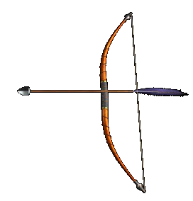

 |
Лук и стрелы |
| ... |
| Лук и стрелы в XII веке
были основным и важнейшим оружием дальнего боя --
как правило, каждая битва начиналась с
перестрелки стрелами. В типичном строении войска
спереди и с флангов в походном порядке
находились стрелки, чьей задачей было не
допустить внезапного налета вражеской конницы и
пехоты и обеспечить спокойное развертывание
основных сил своего войска в боевые порядки. Сила
сложных русских луков была огромной -- до 80 (!) кг. Обучение стрельбе из лука в Древней Руси начиналось с малых лет. Форма сложного лука с натянутой тетивой напоминала букву «М» с плавными перегибами, составные части лука имели специальные названия: середина лука называлась рукоятью, длинные упругие части по обе стороны от рукояти -- рогами или плечами лука, а завершения с вырезами для петель тетивы -- концами. Сторону лука, обращенную во время стрельбы в сторону цели, называли спинкой, а сторону, обращенную к стрелку -- внутренней стороной лука. Места стыков скрепляли обмоткой сухожильными нитями и называли узлами. Луки на Руси делались испокон веков такими, что их можно было использовать в любую погоду. Конные лучники, как правило, использовали короткие луки, пешие воины -- соответственно более длинные. Каждый лучник выбирал лук по свои силам, определяя также длину стрелы по своему росту и длине рук. При стрельбе из лука использовали специальные перчатки, палечники и костяные или роговые кольца для указательного пальца правой руки. Все это было призвано предохранить лучника от повреждений во время напряженной стрельбы. Для хранения своих стрел лучники использовали колчаны -- тулы. Они были двух типов: цилиндрического, с расширением у дна, и более простого полуцилиндрического. Вместительность типичного колчана редко превышала 20 стрел, стрелы в колчане укладывались оперением вверх. Каждая стрела состояла из трех частей -- древка, наконечника и оперения. Длиною стрелы были от 75 до 90 см, толщиною -- от 7 до 10 мм. Древко стрел окрашивалось в различные цвета в зависимости от их предназначения. Наконечники стрел насаживались на древко двумя способами в зависимости от формы посада втулки или черешка: втулчатые наконечники надевались на древко, а черешковые -- вставлялись в его торец. На тыльном конце древка вырезалось ушко, куда тетива входила во время натяжения. Оно имело глубину 5-8 мм и ширину 4-6 мм. Оперение стрелы придавало ей устойчивость в полете и делало попадание в цель более точным. На Руси типичным было оперение в 2-4 пера длиною от 12 до 15 см. Наконечники стрел имели самую разнообразную форму, которая зависела от цели, для которой предназначались стрелы: против незащищенного врага использовали трехлопастные и плоские широкие наконечники, в то время как двушипные не позволяли раненному освободится от стрелы, не расширив раны. Долотовидные наконечники были эффективны при стрельбе по защищенному шлему и щиту противника. |
Текст и
иллюстрации (c) 1997 Snowball Interactive Entertainment, Inc. |